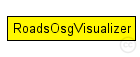

This documentation is released under the Creative Commons license
This documentation is released under the Creative Commons licenseSimple support module to visualize road network as received via TraCI.
See the Veins website for a tutorial, documentation, and publications .
Author: Christoph Sommer
See also: TraCIScenarioManager
The following diagram shows usage relationships between types. Unresolved types are missing from the diagram.
The following diagram shows inheritance relationships for this type. Unresolved types are missing from the diagram.
| Name | Type | Default value | Description |
|---|---|---|---|
| enabled | bool | true |
whether to enable any of the functionality of this module |
| lineColor | string | "firebrick4" |
line color of roads |
| lineWidth | double | 1 |
line width of roads |
| Name | Value | Description |
|---|---|---|
| display | i=block/segm | |
| class | veins::RoadsOsgVisualizer |
// // Simple support module to visualize road network as received via TraCI. // // See the Veins website <a href="http://veins.car2x.org/"> for a tutorial, documentation, and publications </a>. // // @author Christoph Sommer // // @see TraCIScenarioManager // simple RoadsOsgVisualizer { parameters: @display("i=block/segm"); @class(veins::RoadsOsgVisualizer); bool enabled = default(true); // whether to enable any of the functionality of this module string lineColor = default("firebrick4"); // line color of roads double lineWidth = default(1); // line width of roads }
This documentation is released under the Creative Commons license